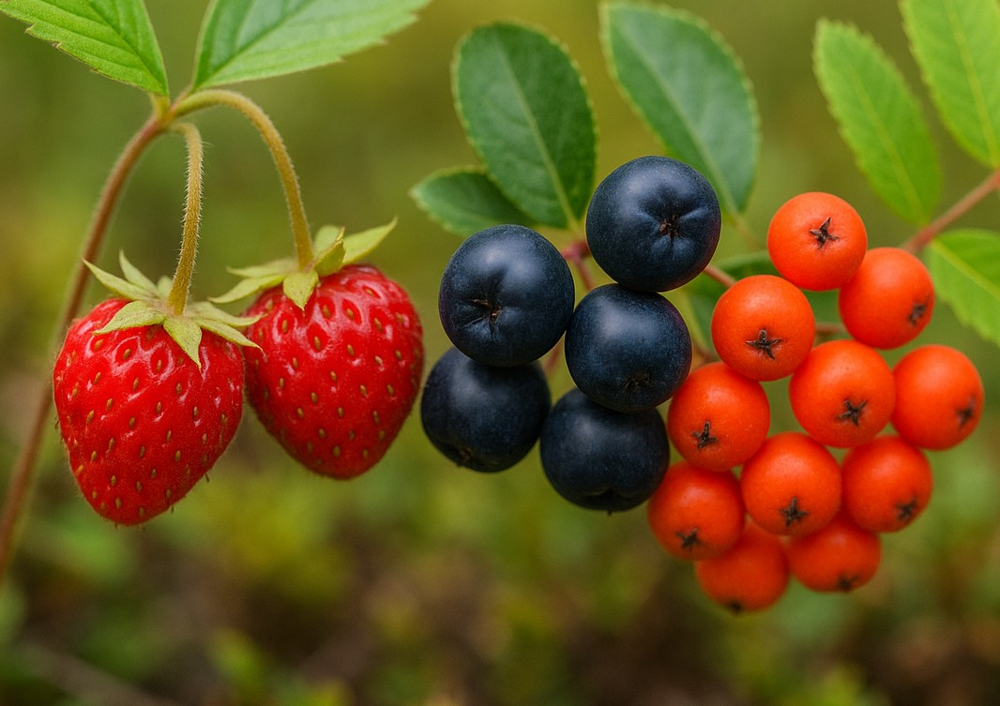
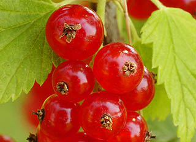
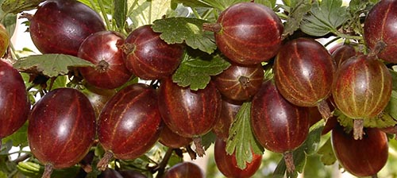
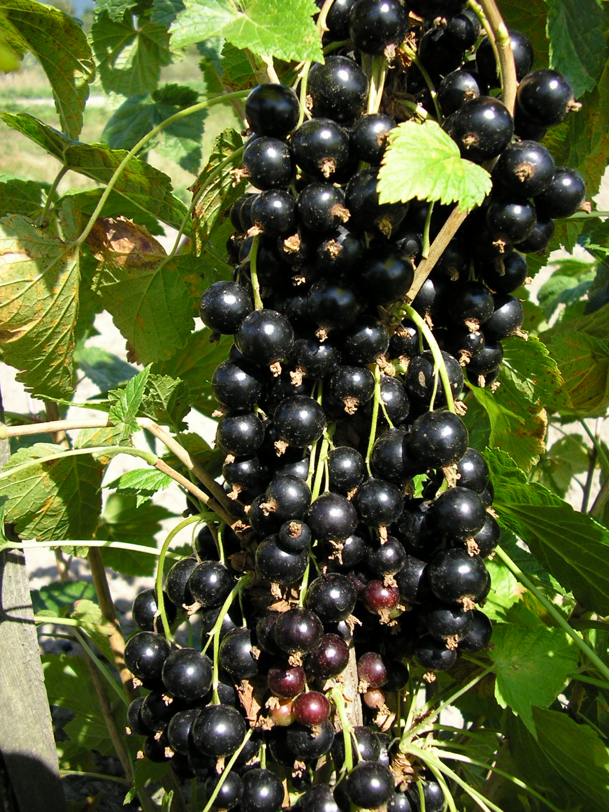

Ovocné školkařství
Velké Losiny
Šlechtitelská stanice se zaměřuje na ovocné výpěstky a drobné ovoce. Sortiment i aktuální dostupnost rostlin ověřte přímo u stanice.

Pěstované druhy
Drobné ovoce a ovocné výpěstky
Konkrétní odrůdy i stav zásob se řídí sezónou. Aktuální nabídku zveřejňuje stanice na vlastním webu.

Drobné ovoce

Drobné ovoce
Angrešt

Drobné ovoce
Maliník
Sortiment
Další druhy

Co je doložené
Šlechtění, udržování a množení
Veřejné oborové zdroje potvrzují zaměření na rybíz, angrešt, maliník a další ovocné druhy. Naopak tvrzení o „genetickém centru“, naučné stezce a stovkách odrůd nebyla doložena a z webu zmizela.
Stanice je uvedena také mezi členy Ovocnářské unie ČR ↗.
Kontakt
Šlechtitelská stanice Velké Losiny
| Adresa | Rudé armády 330, 788 15 Velké Losiny |
|---|---|
| Telefon | +420 583 248 364 · +420 724 610 615 |
| sempra.vlosiny@seznam.cz | |
| Provozovatel | SEMPRA PRAHA a. s., IČO 45797439 |
Údaje odpovídají webu stanice ↗ a oborovým registrům.
Objednávka a návštěva
Před cestou ověřte dostupnost vybraných rostlin a aktuální prodejní dobu.
Napsat do Velkých Losin →